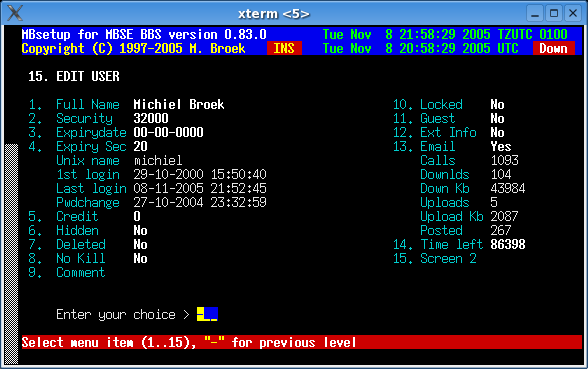
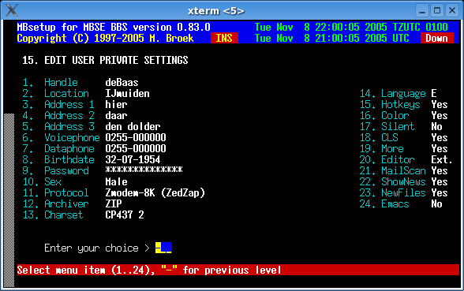

Last update 08-Nov-2005
MBSE BBS Setup - BBS Users.
Introduction.
This screen lets you edit some settings of the BBS users. Note that the users database will never be packed and users will always keep their record number. If a user is deleted the record will be blanked. New users will get a blank record if it exists, otherwise the database will be expanded. The reason for this is the LastRead pointers of the message areas, BBS systems who do it in another method mostly can't keep track of LastRead pointers and records, and they mix all users LastRead pointers. Fields that can be changed by the users themselves are in the second screen.
Edit User
Full Name The full (Fidonet) name of the user. Security The security level of the user. Expirydate The expiry date of the user DD-MM-YYYY. Expiry Sec The security level the user gets after expiry. Unix uid Displays the unix name of the user. 1st login Displays the date of the first login. Last login Displays the date of the last login. Pwdchange Displays the date of the last password change. Credit The users credit. Hidden If the user is hidden from listings etc. Deleted User must be deleted. No Kill User can never be deleted. Comment The comment about this user. Locked Locked out of the BBS. Guest Is this a "guest" account on/off. Ext Info Send ^aKLUDGES with BlueWave downloads. Email If this user has an email address. Calls Displays the number of calls. Downlds Displays the number of downloads. Down Kb Displays the number of Kilobytes downloaded. Uploads Displays the number of uploads. Upload Kb Displays the number of Kilobytes uploaded. Posted Displays the number of messages posted. Time left Show the time left in minuts and reset the time. Screen 2 Go to next setup screen.Watch out when changing the unix userid of the user, you need to change the system password file and the users home directory manually.

Edit User Private Settings
Handle The nickname of the user. Location The location of the user. Address 1 The address of the user line 1. Address 2 The address of the user line 2. Address 3 The address of the user line 3. Voicephone The voice phonenumber of the user. dataphone The data phonenumber of the user. Birthdate The birthdate of the user DD-MM-YYYY. Password Change password for this user. Sex Users sex, male or female. Protocol The selected file transfer protocol. Archiver The selected archiver. Charset The users preffered character set. Screenlen The length (lines) of the users screen. Language The language the user uses. Hotkeys Hotkeys on/off. Color Color on/off. Fs Chat Fullscreen Chat on/off. Silent Do not disturb on/off. CLS Sent clearscreen codes on/off. More More prompt on/off. Editor Select message editor. MailScan Scan for new mail at logon on/off. ShowNews Show "news" screens on/off. NewFiles New files scan at logon on/off. Emacs Use Emacs (or Wordstar) FS edit shortcut keys.

 Back to index
Back to index